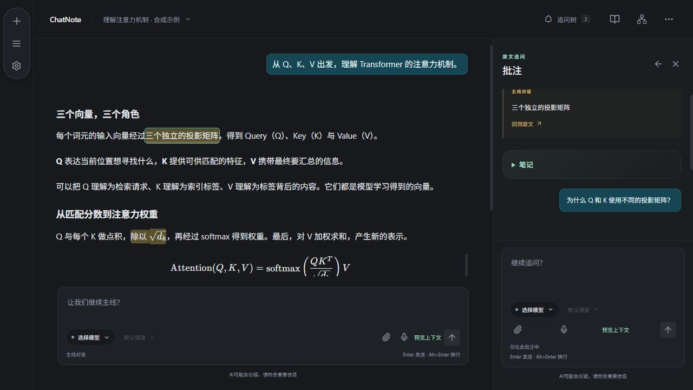
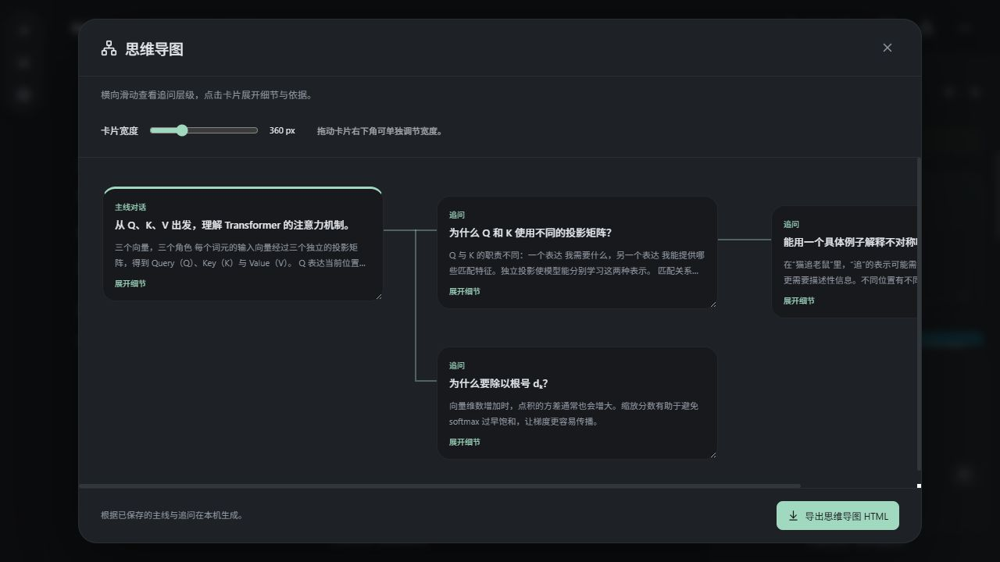
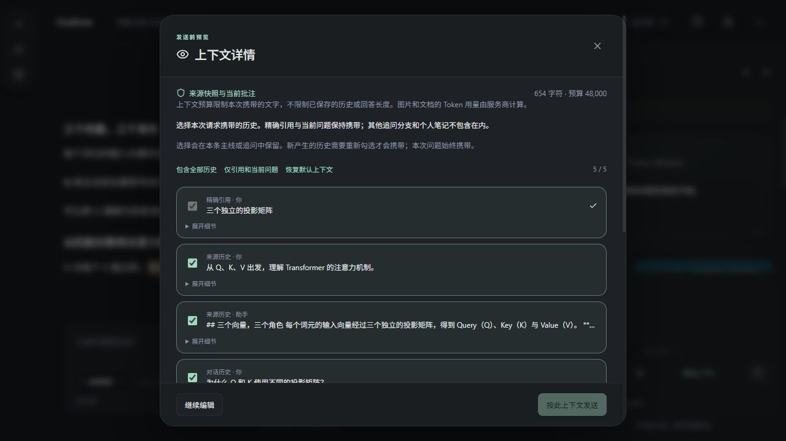
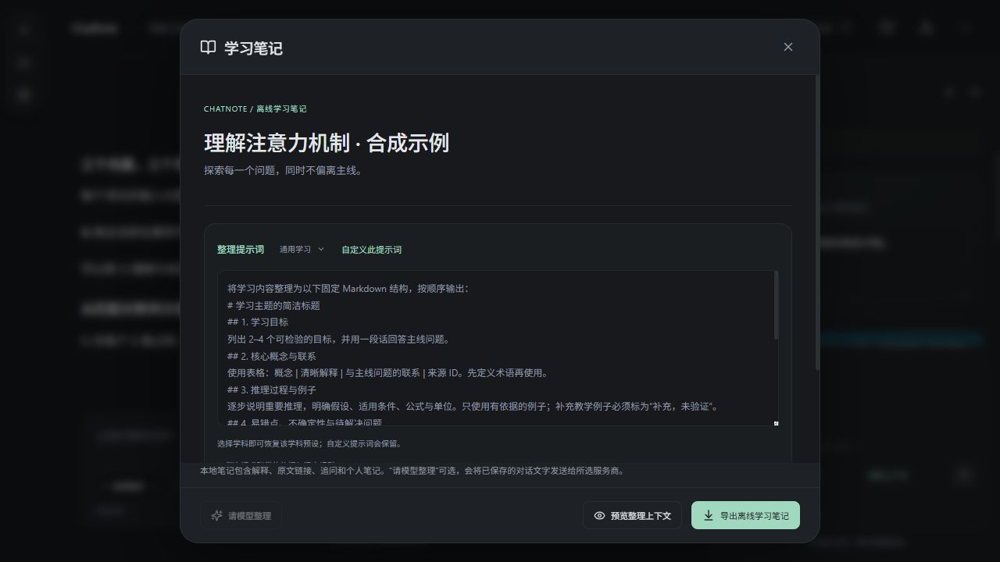

沿著主線學習
用熟悉的對話方式理解一個主題。文字、公式與代碼在同一個閱讀空間裡。

從閱讀到追問，再到回顧，讓學習有跡可循。
用熟悉的對話方式理解一個主題。文字、公式與代碼在同一個閱讀空間裡。
選中回答裡的文字或公式，開啟獨立追問。隨時回到出處，不必在長對話裡反覆尋找。
查看追問層級，寫下自己的筆記，再導出學習筆記或思維導圖 HTML。
這段可暫停、可跳轉的界面導覽使用當前應用截圖與預先準備的內容，不發送模型請求。



選中原文中的疑問，在右側繼續探索；主線保留在左側。
追問綁定對應回答的原文位置，可繼續深入，也可返回出處。
主線與旁支各自保留選定範圍。私人筆記不會自動加入模型請求。
對話與批註留在設備上。完整工作區備份與 HTML 成果承擔不同用途。
閱讀刻度、可調寬卡片、圖片粘貼預覽與三語界面，服務於日常學習。
當前提供 Windows x64 免費測試版。模型服務需自行配置，費用由所選服務商收取。
公開分發日期 2026-10-13 · Windows x64
推薦首次使用。提供安裝嚮導、快捷方式與卸載入口。
edd0ed852c3657102308359b25f086e9203daca39616faf05885a3ac7f2e509a無需安裝程序本身；仍會使用本機工作區和系統憑據庫，並非完全便攜模式。
effc978c70ec8566d56a2857f195fbeeda39168a6ed1370e9a1c83dfa70f575cWindows 10 / 11 x64，需 Microsoft Edge WebView2 運行時。其他平臺暫未提供下載。 WebView2 官方下載
當前程序尚未代碼簽名。若 Windows 提示發佈者未知，請核對文件來源與校驗值；不要關閉系統安全防護。
更新方式：備份工作區 → 關閉舊程序 → 安裝新版本。當前採用手動更新，更新不會重置原工作區或系統憑據。
回退前先在 0.12.0 導出完整工作區備份。0.11.0 沒有回收站管理界面，請先在新版恢復或清理回收站。
c8feef0a80190fd32777b242389fbba83c75b650735f3bdbf772822af5345c07ChatNote_0.11.0.exe ↓9815f267e56c6f511379bc449bad3af45c3589bd0a50473180ab88b14b07e9a2準備一個可用的模型 API 賬號，再用一段不含敏感信息的內容開始體驗。
快速開始當前客戶端免費提供測試使用。模型 API 的額度、計費與使用條件由你選擇的服務商決定；下載客戶端不附贈模型額度。
不一定。圖片取決於所選模型的視覺能力；文件上傳成功不代表模型能閱讀文件，DeepSeek 原始文檔附件尚不能保證直接使用。語音需在模型與連接中選擇支持轉寫的 API 連接；不承諾任意聊天 API 都支持語音。
它限制本次請求可以攜帶的歷史字符規模，不是服務商餘額，也不是精確 token 額度。超出預算時會縮略或省略部分歷史；可查看實際請求收據。
整個對話進入回收站後保留 24 小時。超時後在下次啟動時清理；清理前可恢復，也可確認後立即刪除。單條回答刪除不進入對話回收站。
本機保存不代表請求完全離線。發送問題時，所選上下文、附件或轉寫音頻會傳到你配置的服務。第三方的數據處理規則請查看其政策。
首期公開試用指南以自備 API 為主，不承諾 ChatGPT 套餐授權與第三方分發的可用性。當前只提供 Windows x64，其他平臺尚未交付。
下載由 GitHub Releases 提供，速度取決於網絡。可打開發布頁重試，校驗完整文件後再運行。請反饋系統、網絡類型和錯誤時間，不發送密鑰或私人聊天。
哪裡不順手？哪個想法值得加入？帶上版本、系統與復現步驟，幫助我們把問題說清楚。截圖前請移除私人會話與憑據。
歡迎從設計、開發、測試或文檔參與。先介紹你的興趣與經驗，具體參與方式通過聯繫開發者溝通。